התאמת מחרוזות — נאיבי, Rabin-Karp ו-KMP
⏱ זמן משוער: 70 דק'
0. האינטואיציה — לחפש "מחט" בתוך "ערמת שחת"
כשאתה מקליד Ctrl+F בעורך ומחפש מילה, המחשב פותר את בעיית התאמת המחרוזות (String Matching): נתונים טקסט T ארוך ותבנית P קצרה, ורוצים למצוא את כל המקומות שבהם P מופיעה בתוך T. זה נשמע פשוט — פשוט להזיז את התבנית לאורך הטקסט ולהשוות — אבל השאלה המעניינת היא כמה עבודה זה דורש, והאם אפשר להימנע מהשוואות מיותרות.
באשכול הזה נלמד שלושה אלגוריתמים, לפי סדר עולה של תחכום, על אותה בעיה בדיוק:
- האלגוריתם הנאיבי (Naive) — בודק כל היסט בנפרד; זמן O(n·m).
- Rabin-Karp — ממיר כל חלון ל"טביעת אצבע" מספרית (hash) שאותה אפשר לגלגל קדימה בזמן קבוע; זמן O(n+m) טיפוסי.
- KMP (Knuth-Morris-Pratt) — משתמש בפונקציית התחילית π כדי אף פעם לא לחזור אחורה בטקסט; זמן Θ(n+m).
מקור: string-matching.pdf (עמ' 1), lec-string-matching.pdf (עמ' 1–2)
1. הגדרת הבעיה והסימונים המדויקים
נשמור על הסימון של המרצה (Prof. Avivit Levy) לאורך כל האשכול:
- הטקסט הוא מערך T[1…n] באורך n, והתבנית היא מערך P[1…m] באורך m, כאשר n>m.
- אומרים ש-P מופיעה ב-T עם היסט s (P appears in T with shift s) אם 0 ≤ s ≤ n−m ומתקיים P[1…m] = T[s+1…s+m].
- אם P מופיעה עם היסט s, אז s נקרא היסט חוקי (valid shift); אחרת s הוא היסט לא-חוקי (invalid shift).
- מטרת הבעיה: למצוא את כל ההיסטים החוקיים (all valid shifts) של P ב-T.
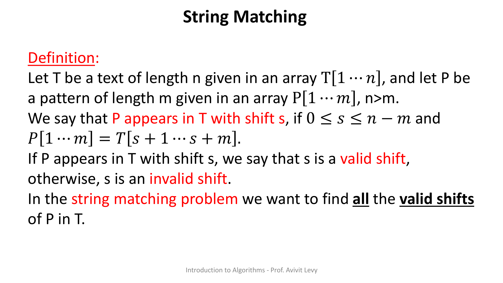
מקור: string-matching.pdf (עמ' 1)
2. האלגוריתם הנאיבי (Naive-String-Matcher)
האסטרטגיה הישירה ביותר: עבור על כל היסט אפשרי s = 0, 1, …, n−m, ולכל היסט השווה תו-תו את התבנית מול המקטע של הטקסט. אם כל m התווים תואמים — דיווח.
Naive-String-Matcher(T,P) 1. n ← length[T] 2. m ← length[P] 3. for s ← 0 to n-m 4. do if P[1…m] = T[s+1…s+m] 5. then print "Pattern occurs with shift" s
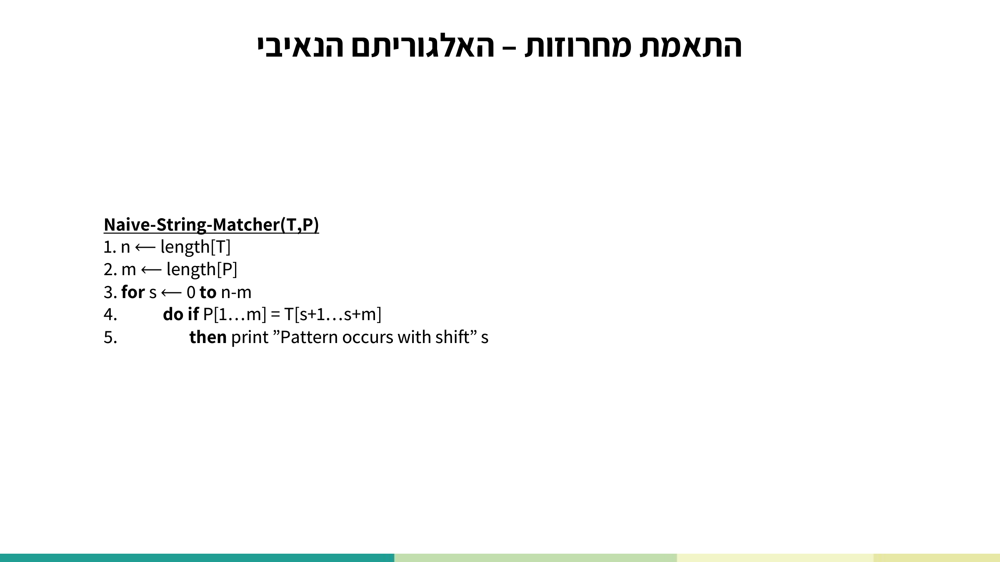
הסבר שורה-אחר-שורה:
- שורות 1–2: n ו-m הם אורכי הטקסט והתבנית.
- שורה 3: הלולאה עוברת על כל היסט אפשרי s מ-0 עד n−m.
- שורה 4: השוואת כל התבנית P[1…m] מול המקטע T[s+1…s+m] — השוואה זו עולה עד m השוואות תו-תו.
- שורה 5: אם המקטע שווה לתבנית — מדפיסים את ההיסט החוקי s.
2.1 דוגמת הריצה של ההרצאה
נריץ על דוגמת הליבה של דק ההרצאה: T = a b a b b a b b a (n=9), P = a b b a (m=4). ההיסטים האפשריים הם s = 0,1,2,3,4,5:
| היסט s | T[s+1…s+4] | תוצאה |
|---|---|---|
| 0 | abab | אי-התאמה ב-P[3] (a≠b) — פסול |
| 1 | babb | אי-התאמה כבר ב-P[1] — פסול |
| 2 | abba | ✅ = P — היסט חוקי |
| 3 | bbab | פסול |
| 4 | babb | פסול |
| 5 | abba | ✅ = P — היסט חוקי |
הפלט המלא: "Pattern occurs with shift 2" ו-"Pattern occurs with shift 5".
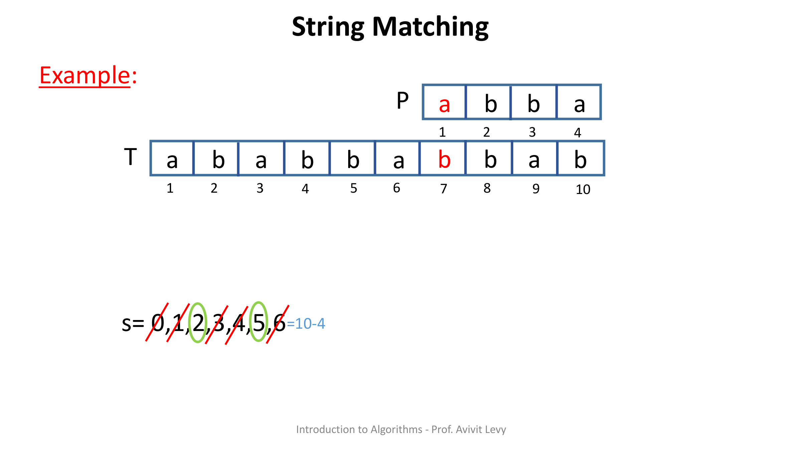
2.2 סיבוכיות הנאיבי
עלות האלגוריתם היא O(n·m): הלולאה החיצונית עושה n−m+1 איטרציות, וכל אחת מבצעת עד m השוואות תו-תו.
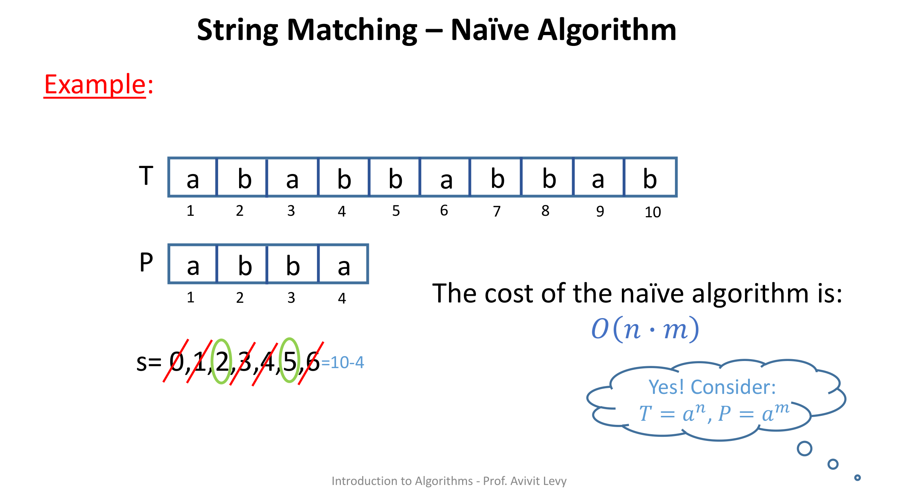
מקור: lec-string-matching.pdf (עמ' 3–16), string-matching.pdf (עמ' 2–12)
3. Rabin-Karp — התאמה בעזרת טביעות אצבע מספריות
הרעיון של Rabin-Karp: השוואת מספרים היא פעולה זולה (זמן קבוע), ולכן נמיר כל חלון של m תווים למספר בבסיס d. במקום להשוות תו-תו, נשווה את המספר של החלון בטקסט לְמספר של התבנית. כדי להימנע מ-overflow — בכל שלב של ההמרה לבסיס d מבצעים modulo q (q ראשוני). הערך המתקבל הוא טביעת האצבע (fingerprint / residue) של החלון.
Rabin-Karp-Matcher(T,P,d,q) 1. n ← length[T] 2. m ← length[P] 3. h ← d^(m-1) mod q 4. p ← 0 5. t_0 ← 0 6. for i ← 1 to m 7. do p ← (dp + P[i]) mod q 8. t_0 ← (dt_0 + T[i]) mod q 9. for s ← 0 to n-m 10. do if p = t_s 11. then if P[1…m] = T[s+1…s+m] 12. then print "Pattern occurs with shift" s 13. if s < n-m 14. then t_(s+1) ← (d(t_s − T[s+1]h) + T[s+m+1]) mod q
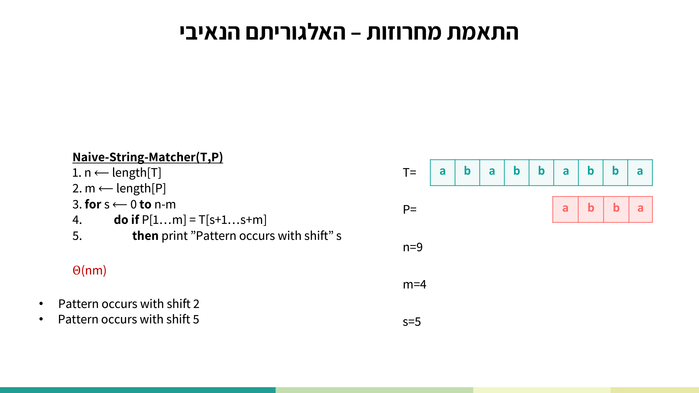
הסבר שורה-אחר-שורה:
- שורות 3–8 — חישוב מקדים: h = d^(m-1) mod q ישמש להסרת הספרה הבכירה בגלגול. בלולאת שורות 6–8 מחשבים בשיטת הורנר (Horner) עם mod את p = ה-hash של התבנית, ואת t₀ = ה-hash של החלון הראשון בטקסט.
- שורה 10: אם ה-hash של התבנית שווה ל-hash של החלון הנוכחי — יש "מועמד".
- שורה 11 — אימות: מכיוון שייתכנו התנגשויות (שני חלונות שונים עם אותו residue), מוודאים תו-תו שהחלון באמת שווה לתבנית.
- שורה 12: אם עבר את האימות — מדווחים על ההיסט s.
- שורה 14 — הגלגול (rolling hash): מחשבים את ה-hash של החלון הבא ב-O(1): מורידים את התו היוצא T[s+1] (מוכפל ב-h), מזיזים בסיס אחד (כפל ב-d) ומוסיפים את התו הנכנס T[s+m+1], הכול mod q.
3.1 נכונות Rabin-Karp
משפט (Correctness of Rabin-Karp): בהינתן טקסט T[1…n] ותבנית P[1…m] עם n>m, האלגוריתם מדווח על כל ההיסטים החוקיים ורק עליהם (all and only the valid shifts).
הוכחה (כפי שעל השקף): כל היסט מדווח הוא אכן חוקי, כי הדיווח היחיד הוא בשורה 12, אליה מגיעים רק אחרי שזוהתה התאמה תו-תו מלאה של m התווים בשורה 11. מנגד, כל היסט שלא דווח הוא אכן לא-חוקי: או שנדחה בשל שארית לא-שווה (non-equal residue) בשורה 10, או בשל אי-התאמה תו-תו בשורה 11.
3.2 סיבוכיות Rabin-Karp
במקרה הגרוע העלות היא O(n·m) — שוב, T=aⁿ, P=aᵐ הופך כל חלון ל-spurious hit ומאלץ אימות מלא. אבל הניתוח המעודן מראה עלות של:
Θ(n) + O( m · ( v + n/q ) )
- v = מספר ההיסטים החוקיים (Number of valid shifts).
- n/q = חסם עליון על מספר ההיסטים הלא-חוקיים בעלי שארית שווה — כלומר ה-spurious hits.
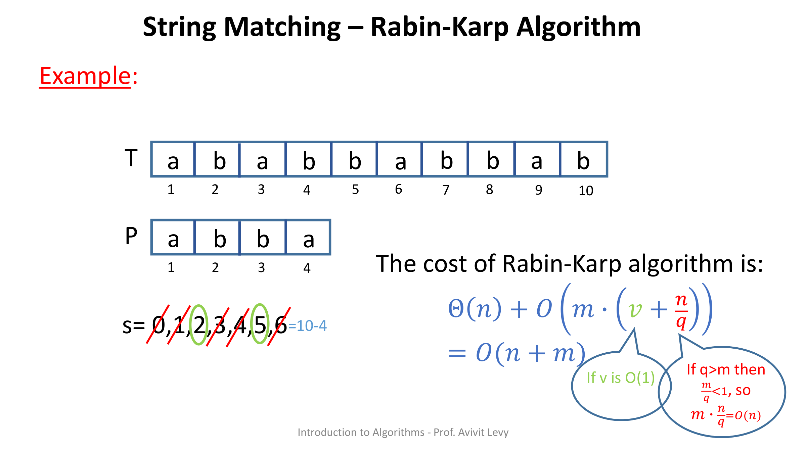
מקור: lec-string-matching.pdf (עמ' 17), string-matching.pdf (עמ' 13–16)
4. תשתית ל-KMP: תחיליות, סופיות ופונקציית התחילית π
לפני שנפגוש את KMP צריך שני מושגים. תהי S מחרוזת באורך n הנתונה במערך S[1…n]:
- P_k הוא תחילית (prefix) של S באורך k אם P_k = S[1…k].
- S_k הוא סופית (suffix) של S באורך k אם S_k = S[n−k+1…n].
דוגמה עבור P = a b b a:
| תחיליות (Prefixes) | סופיות (Suffixes) |
|---|---|
| P₀ = ε | S₀ = ε |
| P₁ = a | S₁ = a |
| P₂ = ab | S₂ = ba |
| P₃ = abb | S₃ = bba |
| P₄ = abba | S₄ = abba |
ε היא המחרוזת הריקה.
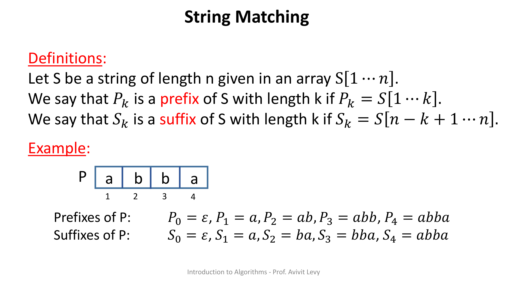
4.1 פונקציית התחילית π
הגדרה: ערך פונקציית התחילית הוא π(q) = k, כאשר k הוא האורך של התחילית הארוכה ביותר P_k של P_q שהיא סופית ממש (proper suffix) של P_q. "סופית ממש" = סופית שאינה המחרוזת כולה (קצרה ממש). המרצה מדגישה את המילה proper עם קו תחתון אדום.
דוגמה עבור P = a b b a: הווקטור הוא π = [0, 0, 0, 1] (עבור q=1,2,3,4). למשל π(4)=1, כי התחילית "a" (P₁) היא הסופית הממש הארוכה ביותר של P₄=abba (הסופית הממש "a").
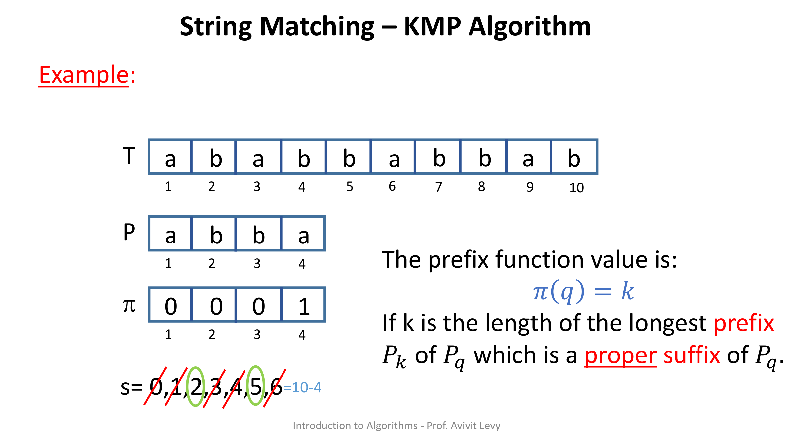
מקור: string-matching.pdf (עמ' 17–18, 32)
5. KMP — התאמה בזמן ליניארי בלי לחזור אחורה בטקסט
הרעיון של KMP: המצביע על הטקסט (i) זז קדימה בלבד ולעולם לא חוזר אחורה. כאשר יש התאמה חלקית ואז אי-התאמה, במקום להזיז את התבנית מההתחלה (כמו הנאיבי), KMP משתמש בפונקציית התחילית π כדי לדעת בדיוק כמה להחליק את התבנית, תוך ניצול מה שכבר הותאם. זהו בדיוק ה"קסם" שמנצל את מבנה התבנית עצמה.
KMP-Matcher-Updated(T,P) 1. n ← length[T] 2. m ← length[P] 3. π ← Compute-Prefix-Function(P) 4. q ← 0 5. for i ← 1 to n 6. do while q > 0 and P[q+1] ≠ T[i] 7. do q ← π[q] 8. if P[q+1] = T[i] 9. then q ← q + 1 10. return q
הסבר שורה-אחר-שורה:
- שורה 3: מחשבים מראש את מערך π של התבנית.
- שורה 4: q = אורך התחילית של P שהותאמה עד כה; מתחיל ב-0.
- שורה 5: סורקים את הטקסט תו-תו, i מ-1 עד n — i לעולם לא חוזר אחורה.
- שורות 6–7: כל עוד יש אי-התאמה (P[q+1] ≠ T[i]) ו-q>0, "מחליקים את התבנית" על-ידי q ← π[q] — קופצים לתחילית הארוכה ביותר שעדיין תואמת.
- שורות 8–9: אם התו הנוכחי תואם — מקדמים את q באחד.
- שורה 10: הגרסה המעודכנת מחזירה את q הסופי — כלומר את אורך התחילית הארוכה ביותר של P שהיא סופית של T (אורך ההתאמה הטובה ביותר בין תחילית P לסוף T).
5.1 דוגמת ריצה של KMP
על אותה דוגמת ליבה: T = a b a b b a b b a b (n=10), P = a b b a (m=4), עם π=[0,0,0,1]. המצביע i על הטקסט זז קדימה בלבד, ו-q מתעדכן לפי π בעת אי-התאמה. הרעיון המרכזי: כשיש התאמה חלקית ואז אי-התאמה, π אומרת כמה להחליק את P מבלי לחזור אחורה ב-T. בסוף מזוהים אותם היסטים חוקיים s=2 ו-s=5 — אך בזמן ליניארי.
5.2 נכונות חישוב π
Claim: עבור תבנית P[1…m], הפונקציה COMPUTE-PREFIX-FUNCTION(P) מחזירה את מערך π עם הערכים הנכונים. ההוכחה באינדוקציה על q:
- בסיס (q=1): האורך היחיד האפשרי לתחילית שהיא סופית ממש (קצרה יותר) של תחילית באורך 1 הוא 0, ולכן π(1)=0 נכון.
- צעד: נניח נכונות עד q−1, ונדע ש-π(q−1)=k. שני מקרים:
- אם P[k+1]=P[q]: אפשר להאריך את התחילית בתו אחד, ולכן π(q)=k+1 (השורות המציבות k+1).
- אם P[k+1]≠P[q]: התחילית אינה ניתנת להארכה, ולכן π(q)<k+1. לולאת ה-while מנסה תחיליות קצרות יותר (דרך π(k)) עד שנמצאת אחת שניתנת להארכה, או עד 0 — ובשני המקרים ההצבה נכונה.
5.3 נכונות KMP
Theorem (Correctness of KMP): בהינתן T[1…n], P[1…m], n>m, KMP מדווח על כל ההיסטים החוקיים ורק עליהם. הוכחה: היסט מדווח רק אחרי שזוהתה הופעה של כל תווי P העוקבים, ולכן הוא חוקי. היסט שלא דווח: או נדחה ישירות בגילוי אי-התאמה, או נדחה במרומז על-ידי פונקציית התחילית — ואז הוא בהכרח לא-חוקי לפי נכונות חישוב π.
5.4 סיבוכיות KMP — ניתוח אמורטייזד
Claim: עלות COMPUTE-PREFIX-FUNCTION(P) היא Θ(m). ההוכחה בניתוח אמורטייזד בשיטת החשבונאות (accounting method): מדמים "קופה" ששומרת את k.
- k לעולם אינו שלילי — "אין משיכת יתר" (No overdraft); אם k=0, לולאת ה-while מסתיימת.
- בכל איטרציה של הלולאה החיצונית k גדל ב-1 לכל היותר. מאחר ש-q חסום ב-m, סך העליות של k חסום ב-m, ולכן גם סך ההורדות (איטרציות ה-while) חסום ב-m.
- מסקנה: סך איטרציות ה-while הוא O(m).
טבלת העלויות של KMP-Matcher לפי מספרי השורות בפסאודוקוד:
| מספר שורה | עלות |
|---|---|
| 1-2 | Θ(n+m) |
| 3 | Θ(m) |
| 4 | Θ(1) |
| 5×{6-7} | O(n) |
| 5×{8-12} | Θ(n) |
| Total | Θ(n+m) |
לולאת ה-while הפנימית עולה O(n) בסך הכל בזכות אותו ניתוח אמורטייזד (q מונוטוני), ולכן העלות הכוללת של KMP היא Θ(n+m).
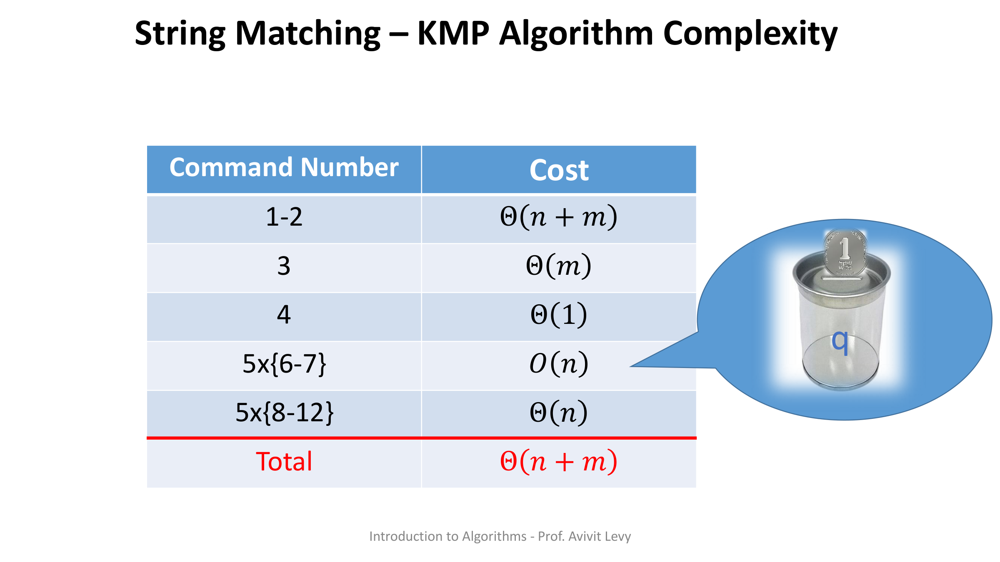
מקור: sol-hw-string-matching.pdf (עמ' 1), string-matching.pdf (עמ' 33–44)
6. סיכום — שלושת האלגוריתמים זה לצד זה
| אלגוריתם | עלות עיבוד מקדים | עלות התאמה | סה"כ טיפוסי | מקרה גרוע |
|---|---|---|---|---|
| נאיבי | — | O(n·m) | O(n·m) | Θ(n·m) |
| Rabin-Karp | Θ(m) | O(m·(v+n/q)) | O(n+m) | Θ(n·m) |
| KMP | Θ(m) | Θ(n) | Θ(n+m) | Θ(n+m) |
מקור: string-matching.pdf (עמ' 12, 16, 44), lec-string-matching.pdf (עמ' 16–17)
7. תרגילי הקורס
רוב תרגילי האשכול משתמשים ב-Rabin-Karp כ"קופסה שחורה" המחזירה valid-shifts, ובונים עליו; שיעורי הבית מתמקדים ב-KMP ובפונקציית התחילית. הורדת הקבצים המקוריים:
⬇️ שיעורי בית (hw-string-matching.pdf) · ⬇️ פתרון שיעורי הבית (sol-hw-string-matching.pdf) · ⬇️ דק ההרצאה + תרגילים (lec-string-matching.pdf)
7.1 שיעורי בית — שאלה 1: חישוב פונקציית הרישא π
שאלה (verbatim): חשב את פונקציית הרישא π עבור התבנית P=ababbabbababbababbabb מעל הא"ב {a,b}.
פתרון רשמי (verbatim) — טבלת π [sol-hw עמ' 1]:
| מיקום | 1 | 2 | 3 | 4 | 5 | 6 | 7 | 8 | 9 | 10 | 11 | 12 | 13 | 14 | 15 | 16 | 17 | 18 | 19 | 20 | 21 |
|---|---|---|---|---|---|---|---|---|---|---|---|---|---|---|---|---|---|---|---|---|---|
| תו | a | b | a | b | b | a | b | b | a | b | a | b | b | a | b | a | b | b | a | b | b |
| π | 0 | 0 | 1 | 2 | 0 | 1 | 2 | 0 | 1 | 2 | 3 | 4 | 5 | 6 | 7 | 3 | 4 | 5 | 6 | 7 | 8 |
הסבר מודרך: ממלאים תא-תא לפי ההגדרה π(q)=k. כל עוד התו הבא ממשיך את ההתאמה, k גדל ב-1 (למשל מיקומים 9–15 שבהם התבנית "מתחילה מחדש" ומתקדמת עד π(15)=7). ברגע אי-התאמה (מיקום 16, אחרי π(15)=7) קופצים אחורה דרך π — π(7)=2, ואז התו תואם ולכן π(16)=3 — וממשיכים לטפס עד π(21)=8. זה בדיוק מה שלולאת ה-while ב-Compute-Prefix-Function עושה.
7.2 שיעורי בית — שאלה 2: הרישא הפלינדרומית הארוכה ביותר
שאלה (verbatim): נתונה מחרוזת T באורך m. תארו אלגוריתם המוצא את הרישא המקסימלית של T שהיא פולינדרום.
לדוגמה (verbatim): עבור המחרוזת T="evil lived", הרישא המקסימלית שהיא פולינדרום היא "evil live" והפלט של האלגוריתם יהיה 8.
פתרון רשמי (verbatim) [sol-hw עמ' 1–2]:
Find-Longest-Palindrome(T) 1. T' ← reverse(T) Θ(n) 2. q ← KMP-Matcher-Updated(T', T) Θ(n+m) = Θ(n) 3. return q Θ(1)
נכונות (verbatim): נניח ש-T=AB, כאשר A היא הרישא הארוכה ביותר של T שהיא פלינדרום. נסמן ב-T' את T בסדר הפוך. מתקיים T' = B'A' = B'A (כי A פלינדרום, ולכן A'=A). אלגוריתם KMP המקורי מוצא בכל מיקום i את אורך הרישא q הארוכה ביותר של התבנית שמתאימה לטקסט; באיטרציה ה-i הוא משווה את T'[i] עם P[q+1] — כלומר את T[n−i+1] (תווים מסוף הטקסט המקורי) עם T[q+1] (תווים מתחילתו). לכן הערך המוחזר q הוא מספר התווים הזהים הארוך ביותר בין תחילת הטקסט לסופו — שזה בדיוק אורך הרישא הפלינדרומית הארוכה ביותר.
עלות (verbatim): Θ(n).
הסבר מודרך: הטריק הוא רדוקציה — הופכים "בדיקת פלינדרום" ל"התאמת מחרוזות" בין T ל-reverse(T). הרצת KMP-Matcher-Updated על (T', T) מודדת כמה מתחילת T תואם לסופו ההפוך, וזהו בדיוק אורך הפלינדרום הפותח.
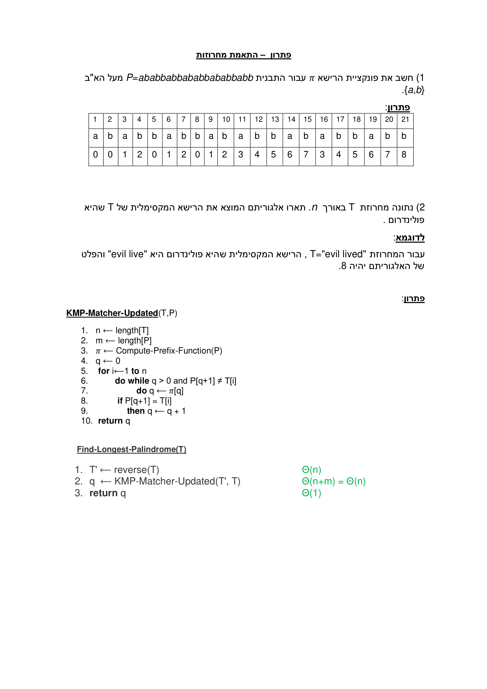
7.3 תרגיל הרצאה — התאמת P1*P2 (Wildcard)
שאלה (verbatim): נתון טקסט T ושתי תבניות P1, P2. כתבו אלגוריתם המוצא את כל מופעי P1*P2 כאשר ה-* היא מחרוזת תווים באורך כלשהו. עליכם להדפיס למסך את ההיסט ואת אורך המחרוזת P1*P2. ה-* משמשת כ-wildcard לתבנית טקסט.
דוגמה (verbatim): עבור הקלט P₁=aa, P₂=bb, T=aaabbb, m₁=2, m₂=2, n=6, הפלט:
aaabbb S=0 L=5 aaabbb S=0 L=6 aaabbb S=1 L=4 aaabbb S=1 L=5
פתרון (verbatim) [lec עמ' 29–30]: נריץ רבין-קארפ פעם אחת עם P1 ופעם שנייה עם P2, ונדפיס את הפתרונות שעבורם האינדקס של הפתרון עם P2 יהיה לפחות m₁ יותר מהאינדקס של הפתרון עם P1:
Find-Wildcard-String(T, P1, P2, m1, m2, d, q) 1. valid-p1-shifts ← Rabin-Karp-Matcher(T,P1,d,q) 2. valid-p2-shifts ← Rabin-Karp-Matcher(T,P2,d,q) 3. for shift1 ∈ valid-p1-shifts 4. do for shift2 ∈ valid-p2-shifts 5. do if shift1 + m1 ≤ shift2 6. then print start = shift1, length = shift2 + m2 − shift1
עלות (verbatim) [עמ' 30]: שורות 1+2: Θ(n) + O((m1+m2)·(V + n/q)); שתי הלולאות המקוננות: O(n²); סה"כ: O(n²).
נכונות (verbatim): בשלבים 1–2 מוצאים את כל מופעי P1 ו-P2 בעזרת רבין-קארפ שנכונותו הוכחה. P2 נדרש להופיע אחרי P1, ואת זה מבטיח שלב 5 (מדפיסים רק כאשר shift1 + m₁ ≤ shift2). מאחר וההיסטים ב-valid-p1-shifts וב-valid-p2-shifts הם סדרות עולות ממש, ולכל התאמה של P1 בודקים את כל התאמות P2 האפשריות פעם אחת — נדפיסים בדיוק את כל המופעים הנכונים.
7.4 תרגיל הרצאה — בדיקת סיבוב מעגלי
שאלה (verbatim): בהינתן מחרוזות T' ו-T, כתוב אלגוריתם אשר קובע אם מחרוזת T היא סיבוב מעגלי של מחרוזת T'.
הגדרה (verbatim): מחרוזת T' היא סיבוב מעגלי של מחרוזת T=t₁t₂…tₙ אם קיים 1≤i≤n כך ש-T' = t_i t_{i+1}…t_n t_1 t_2…t_{i-1}. לדוגמה: T=mommy, T'=mymom — T הינה סיבוב מעגלי של T'.
פתרון (verbatim) [lec עמ' 28–30]: נשים לב ש-T' היא סיבוב מעגלי של T אם ורק אם T' מופיעה במחרוזת T·T, ובתנאי ששתי המחרוזות באותו אורך.
Circular-Rotation-String-Match(T, T', d, q) 1. if length(T) != length(T') 2. then return False 3. TT ← T·T 4. valid-shifts ← Rabin-Karp-Matcher(TT,T',d,q) 5. if length(valid-shifts) > 0 6. then return True 7. else return False
עלות: עלות רבין-קארפ. נכונות (verbatim): על-ידי שרשור T לעצמה מקבלים מחרוזת TT שבה כל תת-מחרוזת באורך n והיסט s היא סיבוב מעגלי של T. אם נמצאת התאמה בין T' לתת-מחרוזת כזו — T' היא סיבוב מעגלי של T והאלגוריתם מחזיר True; אחרת False. נכונות מציאת ההתאמה נשענת על נכונות רבין-קארפ. אם האורכים שונים — ההגדרה לא תתקיים ומחזירים False.
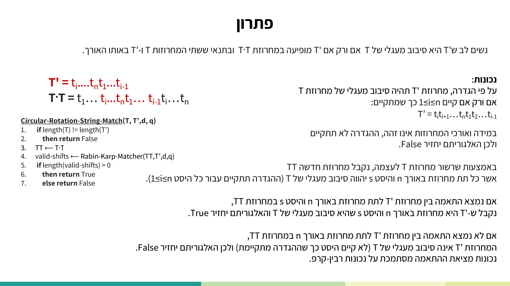
7.5 תרגיל הרצאה — התאמה הופכית (א"ב בינארי)
שאלה (verbatim): נגדיר את בעיית ההתאמה ההופכית: קלט: T=t₁…tₙ ותבנית P=p₁…pₘ. פלט: כל המיקומים ב-T שעבורם t_{i+j} ≠ p_j לכל j=1,…,m. כאשר הא"ב מוגבל להיות 0 או 1 בלבד — כתבו אלגוריתם מהיר, הוכיחו נכונות ונתחו סיבוכיות.
פתרון (verbatim) [lec עמ' 25]: הרעיון: נהפוך את ספרות התבנית P (כל 0 ל-1 ולהיפך), ונריץ רבין-קארפ על הטקסט T ועל התבנית ההפוכה. עלות: עלות רבין-קארפ. נכונות: אם רבין-קארפ מוצא התאמה בהיסט s לתבנית ההפוכה (התאמה אות-אות), אז בהיפוך חזרה של אותיות התבנית נקבל אי-התאמה אות-אות — בדיוק כנדרש.
מקור: hw-string-matching.pdf, sol-hw-string-matching.pdf (עמ' 1–2), lec-string-matching.pdf (עמ' 24–31)
8. בדיקה עצמית
מריצים את האלגוריתם הנאיבי על T = ababbabbab (n=10) ו-P = abba (m=4). אילו היסטים הם החוקיים?
ב-Rabin-Karp, מהו "spurious hit" (פגיעה מזויפת)?
תחת אילו תנאים העלות של Rabin-Karp מצטמצמת ל-O(n+m)?
עבור התבנית P = b b a b, מהו וקטור פונקציית התחילית π?
ב-Find-Longest-Palindrome(T), כיצד קוראים ל-KMP-Matcher-Updated כדי לקבל את אורך הרישא הפלינדרומית?